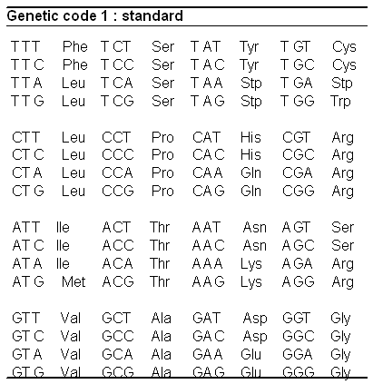

1 Preparing DNA data for training
In this chapter we’ll learn how to create a high fidelity DNA datasets. Two datasets I have created are available on Huggingface: the human CDS and the CDS of 13 vertebrae species.
Scripts for this chapter are found here: https://github.com/MichelNivard/Biological-language-models/tree/main/scripts/Chapter_1
1.1 Garbage in garbage out
High-quality data is essential for training effective machine learning models. In natural language processing (NLP), researchers invest significant effort in curating clean datasets from raw internet text. For example a dataset like ‘fineweb-edu’ contains English text that is of very high quality. Models trained on fineweb-edu (and similar high quality datasets) will improve MUCH faster then the equivalent model trained on other less carefully processed and evaluated datasets.

Those with experience with genetics will know most of what I am about to explain when it comes to the sources of genetic data and the file formats these come in. Those with an ML background will be very familiar with Huggingface and the amazing data/model/training integration their libraries offer. Assembing high quality genomics datasets for language modeling requires familiarity with both. When working with DNA, RNA, and protein sequences, the authoritative sources of data are specialized databases and infrastructures rather than data scraped from the internet. If you want to learn to train DNA/RNA/Protein-based language model, we must learn how, and where, to retrieve data and convert it into a structured format.
In this tutorial, we will begin by collecting coding DNA sequences (CDS) from the human genome using the Ensembl database via BioMart. The goal is to store these sequences in a format suitable for training a DNA-based language model. We will then upload the processed data to Huggingface, a platform for hosting datasets and models for machine learning tasks.
This chapter will introduce key biological and computational concepts, ensuring that both biology newcomers and those unfamiliar with language modeling tools can follow along.
1.2 Understanding Ensembl and BioMart
Fortunately for us, there is decades of work cleaning up genomic data and we can just go and get it from US government funded websites, where it is deposited by the global scientific community. Ensembl is a genomic database that provides extensive annotations for various species, including humans. It offers access to gene sequences, transcript annotations, and protein-coding information. One of its most powerful tools is BioMart, a flexible data retrieval system that allows users to download specific genomic datasets easily.
If we want t work with the data in a language model its efficient to store it in a format that is tailored for machine learning libraries. Unlike text-based NLP datasets, genomic data is structured differently and must be properly formatted before use in a model.
1.2.1 What Are FASTA Files?
A FASTA file is a simple text-based format used for storing biological sequences. Each entry in a FASTA file consists of: 1. A header line (starting with >), which contains metadata such as gene IDs and chromosome locations. 2. A sequence line, which contains the nucleotide or protein sequence.
There is a very comprehensive Wikipedia entry on the FASTA format.
“Sequences may be protein sequences or nucleic acid sequences, and they can contain gaps or alignment characters (see sequence alignment). Sequences are expected to be represented in the standard IUB/IUPAC amino acid and nucleic acid codes, with these exceptions: lower-case letters are accepted and are mapped into upper-case; a single hyphen or dash can be used to represent a gap character; and in amino acid sequences, U and * are acceptable letters (see below). Numerical digits are not allowed but are used in some databases to indicate the position in the sequence.” ((source: https://en.wikipedia.org/wiki/FASTA_format))
| Nucleic Acid Code | Meaning | Mnemonic |
|---|---|---|
| A | A | Adenine |
| C | C | Cytosine |
| G | G | Guanine |
| T | T | Thymine |
| U | U | Uracil |
| (i) | i | inosine (non-standard) |
| R | A or G (I) | puRine |
| Y | C, T or U | pYrimidines |
| K | G, T or U | bases which are Ketones |
| M | A or C | bases with aMino groups |
| S | C or G | Strong interaction |
| W | A, T or U | Weak interaction |
| B | not A (i.e. C, G, T or U) | B comes after A |
| D | not C (i.e. A, G, T or U) | D comes after C |
| H | not G (i.e., A, C, T or U) | H comes after G |
| V | neither T nor U (i.e. A, C or G) | V comes after U |
| N | A C G T U | Nucleic acid |
| - | gap of indeterminate length |
The amino acid codes supported (22 amino acids and 3 special codes) are:
| Amino Acid Code | Meaning |
|---|---|
| A | Alanine |
| B | Aspartic acid (D) or Asparagine (N) |
| C | Cysteine |
| D | Aspartic acid |
| E | Glutamic acid |
| F | Phenylalanine |
| G | Glycine |
| H | Histidine |
| I | Isoleucine |
| J | Leucine (L) or Isoleucine (I) |
| K | Lysine |
| L | Leucine |
| M | Methionine/Start codon |
| N | Asparagine |
| O | Pyrrolysine (rare) |
| P | Proline |
| Q | Glutamine |
| R | Arginine |
| S | Serine |
| T | Threonine |
| U | Selenocysteine (rare) |
| V | Valine |
| W | Tryptophan |
| Y | Tyrosine |
| Z | Glutamic acid (E) or Glutamine (Q) |
| X | any |
| * | translation stop |
| - | gap of indeterminate length |
You’ll notice the FASTA format has a well defined structure, and it could be leveraged to build a complete tokenizer, for now though our 4 character (+6 special characters) tokenizer will have to do.
1.2.2 Why Focus on Coding DNA Sequences (CDS)?
In the example, we retrieve the human coding DNA sequences (CDS), which represent the DNA sequence of protein-coding regions of genes.
While our ultimate goal is to model the entire human genome—and potentially multiple genomes across species or individuals—such tasks require significant computational resources. The tutorials in this book are designed to be accessible, running efficiently on a MacBook or Google Colab. Therefore, we focus on CDS, which are highly structured DNA sequences within genes, that directly transcribed into RNA which is in turn translate into proteins. the Table below contains the direct translation from 3 letter DNA sequence to amino-acid (which are the building blocks of proteins).

In contrast, much of the rest of the genome consists of regulatory regions, which are more complex and less structured. CDS sequences provide a strong foundation for a small DNA-based language model because they contain well-defined biological structure, making them a logical starting point before expanding to more complex genomic elements.
1.3 Why Upload DNA Data to Hugging Face?
Hugging Face provides a robust ecosystem for hosting and sharing datasets, particularly for machine learning applications. Some key advantages include: - Easy accessibility: Researchers and models can easily retrieve datasets. - Standardized format: Datasets are structured for seamless integration with deep learning frameworks. - Direct integration with Hugging Face tools: The data on the Hugging Face Hub integrates seamlessly with their Transformers and Trainer Python libraries, making it easy to load datasets and train models. - Version control and updates: Data can be refined and expanded over time.
By storing our dataset on Hugging Face, we enable efficient training and collaboration for DNA language modeling.
1.4 The Script: Downloading and Formatting Human CDS Data
Below is the R script that downloads human CDS from Ensembl using BioMart, extracts metadata, and saves the processed data into a CSV file. the package we use, biomartr isn’t the official R package but its a great option! it has very extensive documentation, so if you want to download other sequences in the future make sure to start here: https://docs.ropensci.org/biomartr/
# Install necessary packages
install.packages("biomartr", dependencies = TRUE)
if (!requireNamespace("BiocManager", quietly = TRUE)) {
install.packages("BiocManager")
}
# Load required libraries
library(Biostrings)
library(biomartr)
# Download the human CDS dataset from Ensembl
HS.cds.ensembl <- getCDS(db = "ensembl", organism = "Homo sapiens", path = file.path("_ncbi_downloads","CDS"))
# Read CDS data as a Biostrings object
Human_CDS <- read_cds(file = HS.cds.ensembl, obj.type = "Biostrings")
# Extract headers and sequences
headers <- names(Human_CDS)
sequences <- as.character(Human_CDS)
# Function to extract metadata from headers
extract_metadata <- function(header) {
transcript_id <- sub("^>([^ ]+).*", "\\1", header)
chromosome <- sub(".*chromosome:([^ ]+).*", "\\1", header)
start <- sub(".*chromosome:[^:]+:([^:]+).*", "\\1", header)
end <- sub(".*chromosome:[^:]+:[^:]+:([^:]+).*", "\\1", header)
strand <- sub(".*chromosome:[^:]+:[^:]+:[^:]+:([^ ]+).*", "\\1", header)
gene_id <- sub(".*gene:([^ ]+).*", "\\1", header)
gene_biotype <- sub(".*gene_biotype:([^ ]+).*", "\\1", header)
transcript_biotype <- sub(".*transcript_biotype:([^ ]+).*", "\\1", header)
gene_symbol <- sub(".*gene_symbol:([^ ]+).*", "\\1", header)
description <- sub(".*description:(.*)", "\\1", header)
list(
transcript_id = transcript_id,
chromosome = chromosome,
start = start,
end = end,
strand = strand,
gene_id = gene_id,
gene_biotype = gene_biotype,
transcript_biotype = transcript_biotype,
gene_symbol = gene_symbol,
description = description
)
}
# Extract metadata from headers
metadata_list <- lapply(headers, extract_metadata)
metadata_df <- do.call(rbind, lapply(metadata_list, as.data.frame))
metadata_df$sequence <- sequences
# Save data to CSV
write.csv(metadata_df, "genome_sequences.csv", row.names = FALSE, quote = TRUE)
# Print sample data
head(metadata_df)You can run the script yourself, but I have also gone ahead and uploaded it to huggingface: https://huggingface.co/datasets/MichelNivard/Human-genome-CDS-GRCh38
1.5 Summary
In this chapter, we: - Introduced Ensembl and BioMart as tools for retrieving genomic data. - Explained FASTA files and human CDS, which form the core of our dataset. - Discussed the advantages of uploading datasets to Hugging Face, emphasizing its integration with Transformers and Trainer libraries. - Provided an R script to download, process, and store human CDS in a structured format.
In the next chapter, we will explore preprocessing techniques like tokenization and strategies for encoding DNA sequences into a format suitable for training a deep learning language model, and we use Huggingface Transformers and Trainer library to train our first little DNA language model!